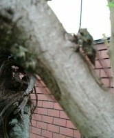
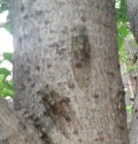

早朝から出かける用事があった。行き先が例の空蝉の森の方角だったので、回り道して寄ってみた。すると 前回 やかましいほど鳴いていたアブラゼミに代わってつくつく法師がいっぱい鳴いていた。秋の訪れを実感するとともに、こんなにつくつく法師がいることにおどろいた。
σ(-_-)も田舎市に住んでいるので、たまに庭先でつくつく法師の声を聴くことがある。しかしこんな大合唱は聞いたことがない。１匹ぐらい実物をみたいと思い、木を見上げながら公園のあちこちを歩いた。すると公園の中の街路灯のそばの地面に、数匹が転がっているのを見つけた。
（孫に死骸でも見せてやるか...）と思いながら足で軽くツンツンしてみると、急に元気になって飛び立った。(゜０゜) 。どうやら、夜の間に街路灯に頭をぶつけて失神していたらしい。そこで今度は慎重に手を伸ばして、失神してるつくつく法師を２匹捕まえた。ちょうど車にプラケースがあったので、それに入れて持ち帰った。
帰宅して女房に見せたあと、庭の木に止まらせて放してやった。木にとまったあと もぞもぞ動いていたが、１時間ほど後 行ってみると２匹ともいなかった。
羽が透き通っているのがつくつく法師の証拠(^-^；
 
|